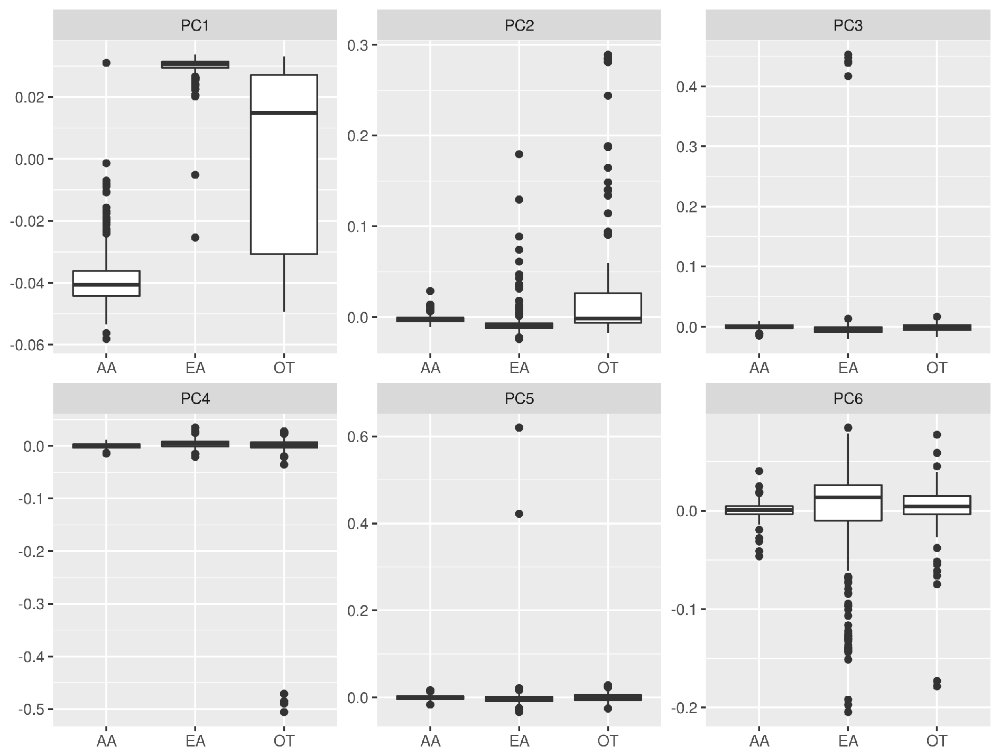
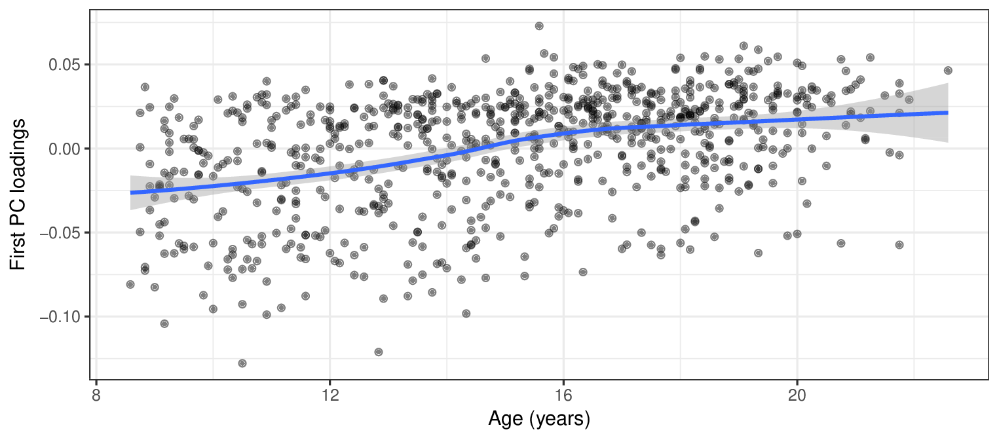

FDR-Corrected SCCA References
Gossmann, A., Zille, P., Calhoun, V., & Wang, Y.-P. (2017). FDR-Corrected Sparse Canonical Correlation Analysis with Applications to Imaging Genomics.
arXiv:1705.04312
[
pdf
]
(under review in IEEE/TMI)
Associated code:
https://github.com/agisga/FDRcorrectedSCCA
Population stratification and confounders

Genomic PC loadings vs. ethnicity.
Population stratification and confounders

fMRI PC loadings vs. age.